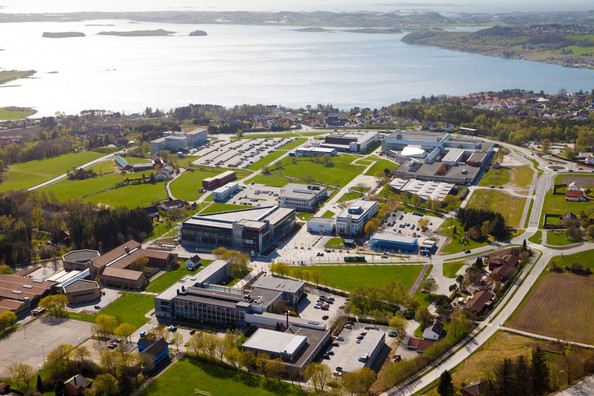
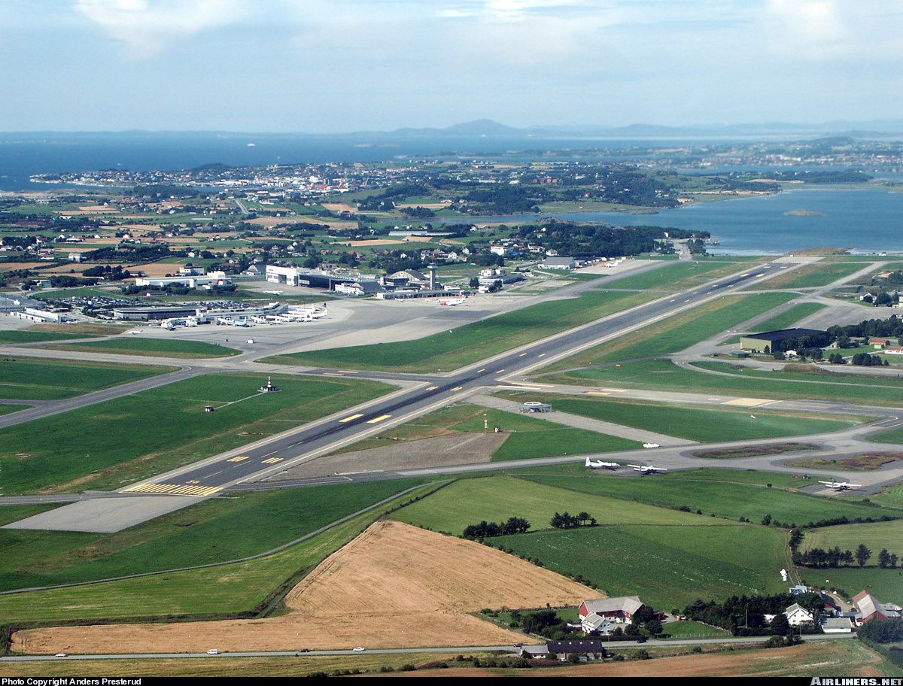

<!DOCTYPE html>
<html lang="en">
<head>
    <meta charset="UTF-8">
    <title>Exercise #2: Markers and details</title>
    <script src="http://maps.googleapis.com/maps/api/js"></script>
    <script>
        function initialize() {
            var mapProp = {
                center: new google.maps.LatLng(58.9, 5.7),
                zoom: 11,
                mapTypeId: google.maps.MapTypeId.ROADMAP
            };
            var map = new google.maps.Map(document.getElementById("googleMap"), mapProp);

            // Marker 1
            var marker1 = new google.maps.Marker({
                    position: new google.maps.LatLng(58.938,5.697)
                });
            marker1.setMap(map);            
            var infowindow1  = new google.maps.InfoWindow({
                content: "<div style='float:left;margin-right: 10px;'>"
                        + "</div>"
                        + "<h3 style='margin-top: 0px;'>University of Stavanger</h3>"
                        + "<p>The university has a main campus located in the neighborhood of Ullandhaug.</p>",
                maxWidth: 320
            });
            marker1.addListener('click', function() {
                infowindow1.open(map, marker1);
            });

            // Marker 2
            var marker2 = new google.maps.Marker({
                    position: new google.maps.LatLng(58.8824,5.632)
                });
            marker2.setMap(map);            
            var infowindow2  = new google.maps.InfoWindow({
                content: "<div style='float:left;margin-right: 10px;'>"
                        + "</div>"
                        + "<h3 style='margin-top: 0px;'>Sola Airport</h3>"
                        + "<p>International airport (SVG) with both fixed-wing aircraft and helicopter traffic.</p>",
                maxWidth: 320
            });
            marker2.addListener('click', function() {
                infowindow2.open(map, marker2);
            });

        }
        google.maps.event.addDomListener(window, 'load', initialize);
    </script>
</head>
<body>
<div id="googleMap" style="width:700px;height:400px;"></div>
</body>
</html>